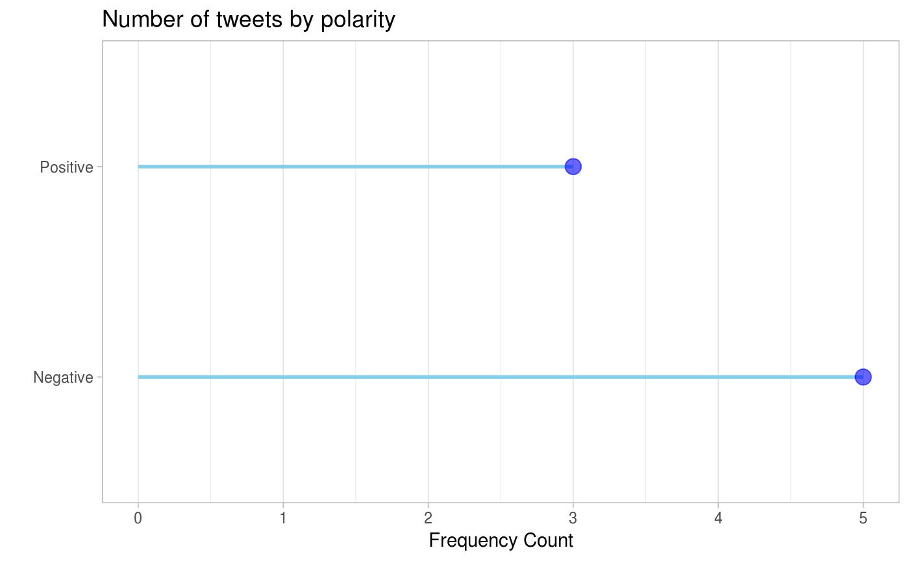
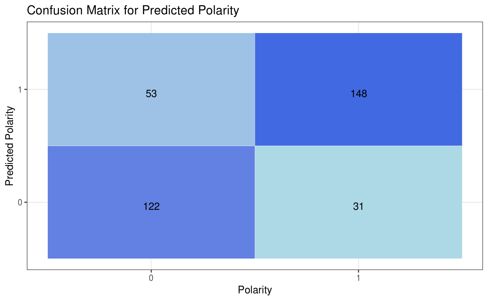

The goal of deepSentimentR is to provide functionality to query, view and analyze sentiment datasets.
Installation
DeepSentimentR
You can install the development version from GitHub with:
Setup using Rocker
You can use rocker, which provides a set of docker images with R and different flavours of tidyverse, ML, geospatial etc.
Setup using rocker/ml
docker run -d --name rstudio -p 8787:8787 -e PASSWORD=<PASSWORD> -e USER=<USER> -v /Users/<USER>/Desktop:/Desktop rocker/mlGo to http://localhost:8787 to login to the rstudio server.
Setup using rocker/tidyverse
Experimental steps
docker run -d --name rstudio -p 8787:8787 -e PASSWORD=<PASSWORD> -e USER=<USER> -v /Users/<USER>/Desktop:/Desktop rocker/tidyverseGo to http://localhost:8787 to login to the rstudio server.
library(tidyverse)
system("python -V") # make sure you're using python3
#If Not, login to docker container and run following
#rm /usr/bin/python
#ln -s /usr/bin/python3 /usr/bin/python
#apt-get install curl
system("curl https://bootstrap.pypa.io/get-pip.py -o get-pip.py")
system("python get-pip.py")
system("pip3 install virtualenv")
install.packages("keras")
keras::install_keras()
devtools::install_github("adityamangal410/deepSentimentR")Example
Visualize polarity frequency based on given filters:
library(dplyr)
library(deepSentimentR)
data("sentiment140_train")
sentiment140_train %>%
freq_by_polarity(user_list = c("", "mcraddictal"),
start_date_time = lubridate::as_datetime("2009-05-30"),
end_date_time = lubridate::as_datetime("2009-06-03"),
keyword_list = c(""))
#> $raw
#> # A tibble: 8 x 14
#> polarity id date query user text nouns adjectives
#> <chr> <int> <dttm> <chr> <chr> <chr> <int> <int>
#> 1 Negative 1.99e9 2009-06-01 16:44:55 NO_Q… mcra… @oy_… 2 1
#> 2 Negative 1.99e9 2009-06-01 06:34:38 NO_Q… mcra… @hem… 3 2
#> 3 Negative 1.97e9 2009-05-30 05:32:26 NO_Q… mcra… @wes… 1 2
#> 4 Positive 1.98e9 2009-05-31 17:31:47 NO_Q… mcra… nd I… 3 1
#> 5 Negative 1.98e9 2009-05-31 15:39:18 NO_Q… mcra… @CRs… 3 1
#> 6 Negative 1.97e9 2009-05-30 13:19:07 NO_Q… mcra… @oy_… 2 2
#> 7 Positive 1.97e9 2009-05-30 01:31:51 NO_Q… mcra… @kit… 2 1
#> 8 Positive 1.98e9 2009-05-31 00:06:28 NO_Q… mcra… @sca… 5 1
#> # … with 6 more variables: prepositions <int>, articles <int>,
#> # pronouns <int>, verbs <int>, adverbs <int>, interjections <int>
#>
#> $frequency
#> # A tibble: 2 x 2
#> polarity counts
#> <fct> <int>
#> 1 Negative 5
#> 2 Positive 3
#>
#> $plot
Use pre-trained LSTM model using Glove Embeddings to make polarity predictions for the sample test dataset:
predict_polarity_keras(model_load_path = system.file("extdata",
"train_glove_lstm.rds",
package = "deepSentimentR",
mustWork = TRUE))
#> $raw
#> # A tibble: 354 x 14
#> polarity id date query user text nouns adjectives
#> <chr> <int> <dttm> <chr> <chr> <chr> <int> <int>
#> 1 Positive 217 2009-05-25 17:29:39 mcdo… Mami… mgg … 7 2
#> 2 Positive 2140 2009-05-20 02:38:17 nike Chet… ew n… 4 2
#> 3 Negative 224 2009-05-25 17:34:51 chen… QCWo… ife?… 9 3
#> 4 Positive 569 2009-06-07 21:38:16 kind… rach… @lon… 8 2
#> 5 Positive 2546 2009-06-08 00:13:48 kind… k8tb… " lo… 7 1
#> 6 Positive 1019 2009-05-11 05:21:25 lebr… unde… atch… 3 1
#> 7 Negative 2110 2009-05-18 01:14:35 Malc… blin… @por… 7 3
#> 8 Positive 256 2009-05-27 23:59:18 goog… maex… " am… 3 1
#> 9 Negative 413 2009-06-02 03:17:04 time… Jaso… " ha… 11 4
#> 10 Positive 1003 2009-05-11 03:18:59 kind… Happ… y Ki… 1 0
#> # … with 344 more rows, and 6 more variables: prepositions <int>,
#> # articles <int>, pronouns <int>, verbs <int>, adverbs <int>,
#> # interjections <int>
#>
#> $predictions
#> # A tibble: 354 x 15
#> polarity id date query user text nouns adjectives
#> <dbl> <int> <dttm> <chr> <chr> <chr> <int> <int>
#> 1 1 217 2009-05-25 17:29:39 mcdo… Mami… mgg … 7 2
#> 2 1 2140 2009-05-20 02:38:17 nike Chet… ew n… 4 2
#> 3 0 224 2009-05-25 17:34:51 chen… QCWo… ife?… 9 3
#> 4 1 569 2009-06-07 21:38:16 kind… rach… @lon… 8 2
#> 5 1 2546 2009-06-08 00:13:48 kind… k8tb… " lo… 7 1
#> 6 1 1019 2009-05-11 05:21:25 lebr… unde… atch… 3 1
#> 7 0 2110 2009-05-18 01:14:35 Malc… blin… @por… 7 3
#> 8 1 256 2009-05-27 23:59:18 goog… maex… " am… 3 1
#> 9 0 413 2009-06-02 03:17:04 time… Jaso… " ha… 11 4
#> 10 1 1003 2009-05-11 03:18:59 kind… Happ… y Ki… 1 0
#> # … with 344 more rows, and 7 more variables: prepositions <int>,
#> # articles <int>, pronouns <int>, verbs <int>, adverbs <int>,
#> # interjections <int>, pred_polarity[,1] <int>
#>
#> $confusion_matrix
#> # A tibble: 4 x 3
#> polarity pred_polarity count
#> <fct> <fct> <int>
#> 1 0 0 122
#> 2 0 1 53
#> 3 1 0 31
#> 4 1 1 148
#>
#> $true_negative
#> [1] 122
#>
#> $true_positive
#> [1] 148
#>
#> $false_positive
#> [1] 53
#>
#> $false_negative
#> [1] 31
#>
#> $precision
#> [1] 0.7363184
#>
#> $recall
#> [1] 0.8268156
#>
#> $f1
#> [1] 0.7789474
#>
#> $accuracy
#> [1] 0.7627119
#>
#> $plot
Check out full reference and examples at - https://adityamangal410.github.io/deepSentimentR/